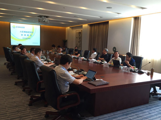

加入收藏夹
设为首页
首页
简介
新闻动态
慢病研究
研究基地
专家资源
人才培养
学术交流
企业文化
新闻动态
MORE

1
2
3
4
慢病头条
政策咨询
学术论文
慢病咨询
抚余市工作调研
2016-09-09
河北大学附属医院慢病研讨会
2016-07-04
中国大医慢病研究院专家莅临我市考察调研
2015-10-09
慢性病研究讨论会在我院召开
2015-10-17
军转民慢病救助工程启动仪式隆重举行
2015-11-22
第十三届全国医药信息学大会在上海召开
2015-12-09
公告栏
MORE
抚余市工作调研
抚余市工作调研
抚余市工作调研
用户登录
联系我们
专家介绍
MORE
钟南山
呼吸科 研究所所长
广州呼吸疾病研究所
陈香美
肾脏病学 主任医师
中国人民解放军总院
邱贵兴
骨科 主任医师
北京协和医院
王辰
呼吸科 院士
中日医院
卢世璧
骨科 研究所所长
中国人民解放军总院
慢病研究
MORE
心脑血管
MORE
心脑血管疾病主要包括哪些？
中国面临心脑血管病大流行
预防心脑血管病 警惕隐性血栓
《中国心血管病报告》在沈发布
心血管病死亡率仍居首位
肿瘤
MORE
三大生活细节让你远离脑肿瘤
肿瘤已被认领
肿瘤 锁定
肿瘤预防 锁定
癌症的预防与治疗
慢阻肺
MORE
慢阻肺 锁定
慢阻肺定义 慢阻肺是什么病
慢阻肺治疗展望.ppt
关注慢阻肺永远不晚(图)
慢阻肺患者健康生活
医养结合
MORE
中国医养结合模式深度调研
解密“医养结合”
南通市医养结合提案
“医养结合”还需迈过几道坎儿
关于加快推进“医养结合”养老模式的提案
示范基地
MORE
抚余市工作调研
抚余市工作调研
抚余市工作调研
抚余市工作调研
抚余市工作调研
抚余市工作调研